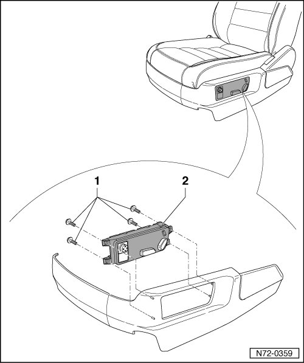

Front Seat Switch Unit
Front Seats
Front Seat Switch Unit
• Removal and installation is described for the left-hand side of the vehicle. Removal and installation for the right-hand side is performed in the same manner.
Removing
- Remove trim for 12-way seat --> [ Front Seat Trim ]. Front Seat Trim
- Remove four bolts - 1 -.
- Remove the switch assembly - 2 - from the trim panel.

Installing
- Perform the steps used for removal in reverse order.